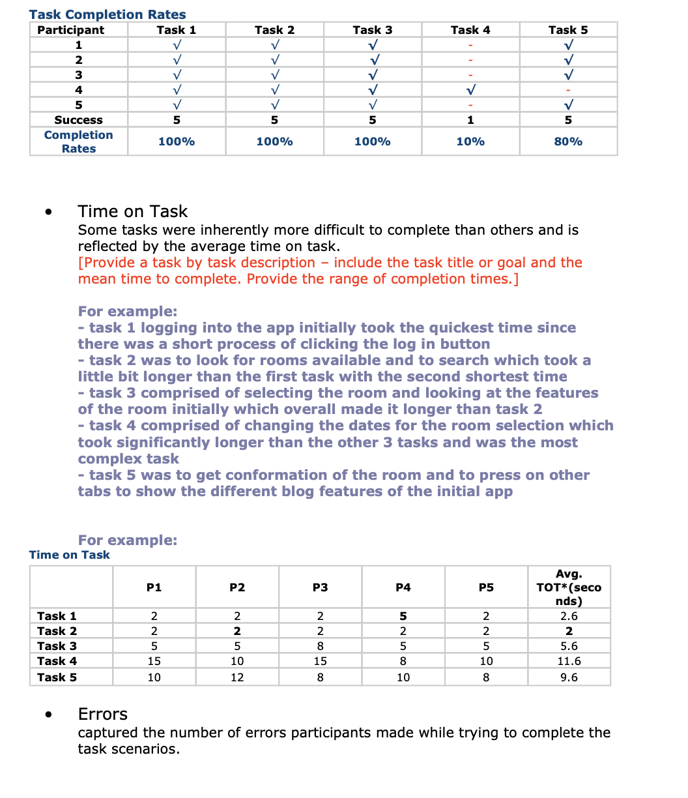
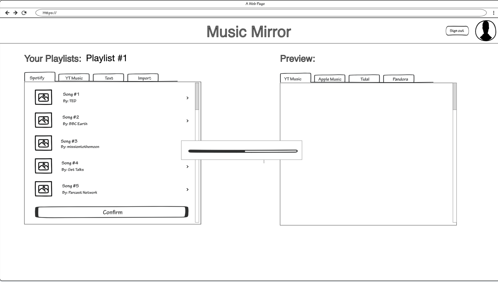
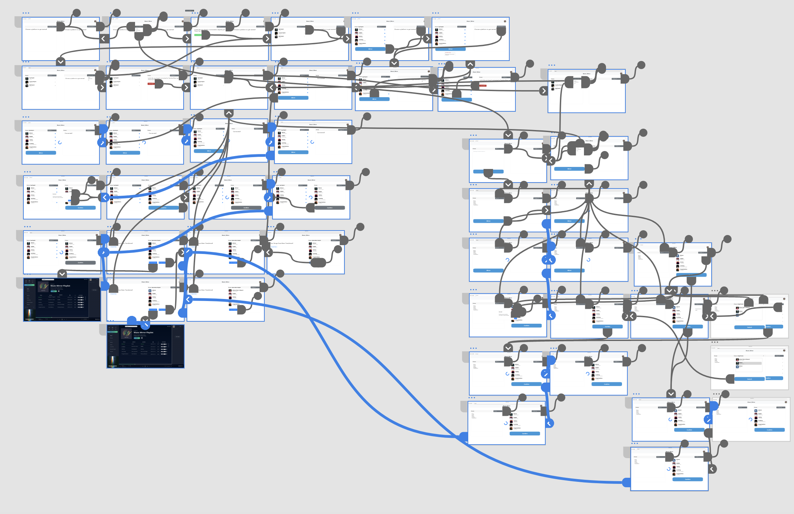

The Problem
Music lovers using multiple streaming platforms couldn't easily transfer their curated playlists between services. Manual recreation was time-consuming and often resulted in lost playlists when switching platforms.
The Solution
Built Music Mirror — a web tool that seamlessly transfers playlists between Spotify, Apple Music, SoundCloud, and YouTube TV with a clean, minimal interface focused on speed and trust.
Impact
- Working prototype delivered in 24 hours
- 4 platform integrations with real-time syncing
- Judge recognition for both functionality and user experience
- Standout project among all hackathon submissions
Initial Observations
Problem identified
- Students frequently used multiple music platforms but couldn't move playlists
- Manual playlist recreation took hours and was error-prone
- Existing tools were complex and didn't prioritize user experience
- Platform lock-in prevented users from exploring new services
Hackathon constraints
- 24-hour deadline for fully functional prototype
- Multiple API integrations required
- No time for extensive user research
- Extreme time pressure on design decisions
Key insight
Users needed a trustworthy, fast, and simple solution that could handle valuable playlist data without complexity.
Market Research
Quick competitive analysis (2 hours)
- TuneMyMusic: Complex interface, limited free transfers
- Soundiiz: Feature-heavy, overwhelming for simple transfers
- Manual methods: Extremely time-consuming copy-paste processes
Opportunity
Create a simplified, speed-focused playlist transfer tool that prioritizes user experience over feature complexity.
Becoming My Users
Research methods (hackathon constraints)
- Quick surveys with 10 college students about platform usage
- Team personal experience with the problem
- Rapid assumption validation through prototyping
Primary user: College music listener
- Goal: Transfer playlists quickly between streaming services
- Pain: "I have 50+ playlists on Spotify but want to try Apple Music"
- Quote: "I just want my playlists moved without losing anything"
Key insights
- Speed was critical — users wanted fast transfers
- Trust essential — handling personal playlist data required transparency
- Simplicity over features — basic functionality more valuable than complexity
- Error handling crucial — users needed confidence nothing would break
User Research & Task Analysis
Competitor Research
Existing solutions analyzed
- TuneMyMusic: Good functionality but cluttered interface
- Soundiiz: Too many features for simple use case
- Native platform tools: Limited to specific platform pairs
Key findings
- Existing tools over-complicated the core transfer use case
- Trust signals missing — unclear data access permissions
- Speed not prioritized — long, multi-step processes
Our advantage
Minimal, trust-focused, fast transfer tool that does one thing perfectly.
Solution
Design principles (established quickly)
- Speed first — Minimize steps and wait times
- Trust through transparency — Clear data access communication
- Minimal UI — Focus on core functionality only
- Error prevention — Robust API failure handling
Key design decisions
- Two-panel layout — source left, destination right with clear transfer flow
- Minimal steps — authenticate, select playlist, transfer
- Real-time feedback — progress indicators and status updates
- Trust elements — clear permission requests and transfer confirmation
Rapid design process
- Hours 1–3: Wireframes and user flow
- Hours 4–12: High-fidelity designs while devs built APIs
- Hours 13–20: Real-time adjustments based on technical constraints
- Hours 21–24: Polish and testing
Initial Wireframes & User Flow
Final Designs
Core experience
- Clean landing page explaining the tool's purpose
- Platform selection — visual icons for all 4 streaming services
- Streamlined authentication — OAuth flow for each platform
- Transfer interface — side-by-side source/destination with progress tracking
- Success confirmation — clear indication of completed transfers
Key features delivered
- Cross-platform support — Spotify, Apple Music, SoundCloud, YouTube TV
- Real-time syncing — live progress updates during transfers
- Error handling — graceful failures with helpful explanations
- Responsive design — works on desktop and mobile
Design system (created rapidly)
- Simple blue/white palette for trust and cleanliness
- Clear typography hierarchy for quick comprehension
- Consistent 8px spacing grid
- Respectful use of platform branding
Design Process & Iterations
Reflection
Results (24-hour outcome)
- Fully functional prototype with working playlist transfers
- Seamless user experience from authentication to completion
- Judge recognition for technical execution and UX design
- Successful team coordination under extreme time pressure
What worked under pressure
- Clear design principles guided all rapid decisions
- Parallel workflows — designed while developers built APIs
- Focus on core experience — avoided feature creep
- Real-time iteration — quick design adjustments as constraints emerged
Key challenges overcome
- Multiple API integrations with different data structures
- Design decisions without testing — relied on established principles
- Technical constraint adaptation — adjusted designs as limitations surfaced
- Team coordination — maintained consistency while working fast
Hackathon learnings
- Simplicity wins under pressure — complex designs would have failed
- Trust signals crucial — even prototypes need user confidence
- MVP mentality essential — core experience over comprehensive features
- Real-time collaboration — constant design/development communication
Personal growth
- High-pressure design — learned to make quick, confident decisions
- Technical collaboration — improved developer communication under deadlines
- Constraint-driven thinking — understanding what's truly essential
- Systems design — created consistent patterns despite time limits